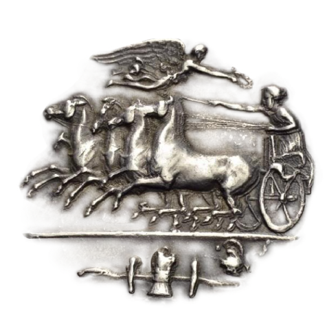

nr wpisu WA-11377
tel.: 662 034 884 lub 512 208 343
email: kontakt@kancelariajakubbak.pl

Zakres usług
Zakres świadczonej pomocy prawnej przez Kancelarię obejmuje w szczególności:- prawo cywilne: sporządzanie umów, reprezentacja przed sądami oraz w rozmowach ugodowych;
- prawo nieruchomości;
- prawo gospodarcze;
- prawo konkurencji;
- prawo handlowe;
- prawo autorskie oraz inne prawa własności intelektualnej, znaki towarowe;
- prawo administracyjne: reprezentacja przed urzędami administacji publicznej oraz w postępowaniu sądowo – administracyjnym;
- prawo budowlane;
- prawo kanoniczne – sprawy o stwierdzenie nieważności małżeństwa;